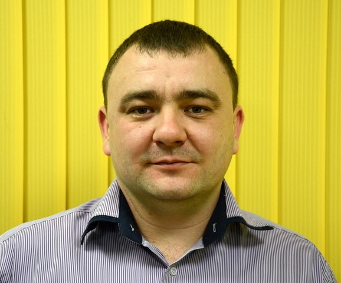

| № |
Цель |
Конечный срок |
Результат |
Наставник |
Методика |
| 1 |
Изучение HTML&CSS |
28.02.2018 |
Знание основ HTML&CSS и фреймворков для применения в веб-разработке:
|
Иванкин А.А. |
Online-курсы, вебинары, литература / frontend development:
- основы:
- "Ознакомительный урок HTML/CSS. Основы создания сайтов";
- "«Обучение веб-разработке». Создание персонального сайта";
- "«Основы веб-дизайна». Создание Landing page";
- "Макетная сетка: колонки против Photoshop, HTML и CSS";
- "Типографика в HTML/CSS";
- "Визуальная верстка";
- "Ускоренная верстка";
- "Ускоренная верстка-2";
- "HTML курс Евгения Попова";
- "CSS курс Евгения Попова";
- "Adobe_Dreamweaver-v2 курс Евгения Попова";
- "Домен и Хостинг";
- "Инфобизнес по модели Е. Попова";
- фреймворки:
- "Первые шаги Bootstrap";
- "Динамический язык стилей LESS";
- "Препроцессоры Less и Sass";
- "Верстаем landing page на HTML5";
- "Верстаем landing page на HTML5 #2";
- "Верстаем landing page на HTML5 #3";
- "Stylus: быстрый старт";
- "Обзор современных технологий эффективной веб-разработки".
- литература:
|
| 2 |
Получение навыков работы с CMS
|
31.03.2018 |
Навыки работы с CMS для применения в веб-разработке:
|
Иванкин А.А. |
Online-курсы, вебинары, литература / frontend development:
- основы:
- "Инструментарий для всех стадий развития веб-разработчика";
- "Создаём сайт на Wordpress за час";
- "Разработка мультиязычных сайтов на Wordpress";
- "Как создать личный блог: курс «Создание блога на Wordpress»";
- "Разработка сайта на Drupal 7";
- "Best Practices при работе с Drupal 8";
- "Азбука виртуального хостинга. Размещаем сайты на TimeWeb".
- литература:
|
| 3 |
Изучение JAVASCRIPT |
31.12.2018 |
Знание основ JAVASCRIPT, библиотек и фреймворков для применения в веб-разработке:
- Сертификат по курсу "Основы программирования. Онлайн-курс".
- Сертификат по курсу "Основы программирования. Видеокурс".
- Сертификат по курсу "Двухдневный интенсив по основам веб-разработки. Создание адаптивного сайта".
- Сертификат по курсу "HTML, CSS, & JavaScript - Certification Course for Beginners".
- Пример сайта загадок с использованием HTML, CSS & JAVASCRIPT, сделанного в Atom.
- Пример сайта галереи с использованием HTML, CSS, JAVASCRIPT & JQuery, сделанного в Brackets.
- Пример сайта кинопоиска с использованием HTML, CSS, ES6 JAVASCRIPT, сделанного в VS Code.
|
Галюк С.В. |
Online-курсы, вебинары, литература / frontend development:
- основы:
- "Основы программирования. Онлайн-курс";
- "Основы программирования. Видеокурс";
- "Двухдневный интенсив по основам веб-разработки. Создание адаптивного сайта";
- "JavaScript и ООП";
- "Работа с переменными в JavaScript";
- "Массивы в JavaScript";
- "Разработка универсального JavaScript-приложения";
- "Универсальное JavaScript-приложение для Windows";
- "HTML5 и Canvas на JavaScript: от простого к сложному";
- библиотеки:
- "Введение в jQuery";
- "jQuery для профессионалов: работа с DOM. Часть 1 и 2";
- "jQuery для профессионалов: работа с селекторами";
- "jQuery для профессионалов: работа с Ajax";
- "Оживляем веб с помощью JQuery, AJAX, JSON, JSONP и iframe";
- "Способы анимации в Web посредством Javascipt и CSS. Web Animations API — как с ним работать. Плюсы и минусы";
- фреймворки:
- "AngularJS для новичка: вчера, сегодня, завтра";
- "Введение в Angular2";
- "Angular+Meteor. Ускоренное создание приложений";
- "React Native изменит мир мобильной разработки";
- "Будущее уже здесь! React Native: один код для iOS и Android";
- литература:
|
| 4 |
Изучение принципов построения бекэнда и серверных технологий |
31.12.2019 |
Понимание использования серверных языков в веб-разработке; навыки работы с базами данных и языком запросов:
|
Вивдыченко А.Н. |
Online-курсы, вебинары, литература / backend development:
- основы:
- "Обзорный вебинар по Node.js";
- "Подготовка рабочего окружения для Node.JS разработчика";
- "Чат для вашего сайта: NodeJS + WebSockets";
- "Skype-боты на NodeJS: чат и звонки";
- "Пишем Instagram-бота на Node.js";
- "Selenium - автоматизация веб-приложений через браузер";
- "Автоматизация сервисов Google: Youtube и личное расписание";
- "Обзорный вебинар по миру Ruby и Rails";
- "HTML/CSS, JavaScript и Ruby/Rails. Инструменты на все случаи жизни";
- "Интенсив «Основы языка Python». Первое знакомство с языком Python";
- "Telegram-бот на Python. От первых запросов до деплоя";
- "Java Starter";
- "Java. Основы работы с БД";
- "Курс по SQL";
- "Видеокурс по Transact-SQL";
- "Руководство по MS SQL Server 2017";
- "Руководство по PostgreSQL";
- "Разработка веб-приложений на PHP + PostgreSQL";
- "Руководство по MySQL";
- "Выборка данных из MySQL с группировкой средствами PHP";
- "Битрикс24. Повышаем эффективность работы";
- "1С Битрикс — система для успешной веб-разработки";
- "Эффективная архитектура баз данных. Как профилировать и оптимизировать запросы и структуру БД".
- литература:
|
| 5 |
Изучение PHP, участие в создании сайта, взятие на поддержку |
31.12.2020 |
Знание основ PHP, библиотек и фреймворков для применения в веб-разработке; участие в создании сайта на PHP; взятие на поддержку:
|
Клименко Ю. |
Online-курсы, вебинары, литература / frontend and backend development:
- основы:
- "Разработка сайта самостоятельно — интенсив «Обучение веб-разработке»";
- "Веб-разработка — Быстрый старт";
- "PHP Starter";
- "PHP — Личный блог";
- "Первые шаги, впечатления от PHPStorm";
- "Работа в PHPStorm";
- "Веб-разработка на PHP. Часть 1 и 2";
- "Мастер-класс по веб-разработке. Часть 1 и 2";
- "PHP и ООП: от новичка до профессионала. Часть 1 и 2";
- "Навыки и инструменты для эффективной разработки на PHP ";
- "Структуры данных в PHP. Библиотека PHP SPL";
- "PHP 7: новые возможности";
- "PHP 7.0-7.1: наиболее важные изменения";
- "«Магия» и другие неочевидные моменты и «секреты» в PHP";
- "Что такое Sentry и почему без него тяжело при разработке веб-проекта";
- библиотеки:
- "Обзор популярных библиотек и фреймворков для PHP";
- фреймворки:
- "Slim a micro framework for PHP";
- "Обзор и установка PHP-фреймворка Codeigniter";
- "Разработка веб-приложения на PHP-фреймворке Codeigniter";
- "Что такое MVC на примере Laravel фреймворка";
- "Сайт как «раз, два, три!» с помощью yii фреймворка";
- "Введение в Yii2 Framework";
- "Магия Yii2 или осваиваем геттеры и сеттеры";
- "Профессиональная работа с базами данных в Yii2";
- "Yii2. Невероятная мощь фреймворка нового поколения";
- литература:
|